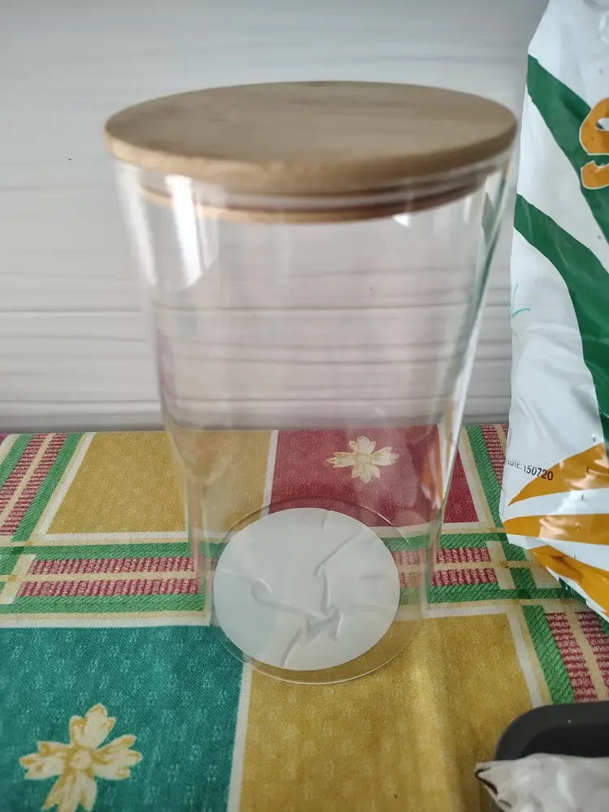

Un terrario en botella (o en tarro) es un pequeño ecosistema dentro de un recipiente de cristal cerrado. Su gracia es que, bien montado, casi no necesita riego: el agua que se evapora vuelve a caer sobre la tierra y las plantas. En esta guía te explico qué materiales usar, cómo montarlo por capas y qué cuidados le dan más vida.

Un tarro de cristal con tapa de madera: un recipiente sencillo para este tipo de terrario.
1. Qué necesitas
- Un recipiente de cristal con tapa: un tarro de cocina, una botella de boca ancha o una urna. Debe dejar pasar la luz y cerrar bien.
- Grava o arcilla expandida para el drenaje.
- Carbón activo (opcional): ayuda a controlar olores y a frenar el moho.
- Sustrato preparado, mejor con perlita o fibra de coco. Te explico cómo hacerlo en Cómo hacer el sustrato.
- Musgo y una o dos plantas pequeñas que toleren la humedad.
- Herramientas: un palo o unas pinzas largas, un pulverizador y una cucharilla.
2. Elige bien el recipiente
Antes de comprar nada, mide la boca. Con una abertura de unos 5 cm puedes meter la mano y colocar plantas pequeñas. Con menos, necesitarás pinzas y paciencia. Además, la altura da espacio para las raíces y para que las plantas crezcan sin tocar la tapa. Si quieres ver qué tipos de cristal funcionan mejor, mira La urna perfecta: cómo elegir el cristal para tu terrario.
3. Paso a paso: montaje por capas
El orden de las capas importa, porque cada una tiene una función. Sigue estos pasos:
- Limpia el recipiente por dentro con agua y sin detergente fuerte. Sécalo bien: los restos de jabón pueden dañar a las plantas.
- Capa de drenaje: de 2 a 3 cm de grava o arcilla expandida. Sirve para que el agua no se acumule en contacto con las raíces.
- Carbón activo (si lo usas): una capa fina de 1 cm sobre la grava.
- Sustrato: de 5 a 7 cm, según el tamaño del tarro. Presiónalo suavemente, sin apelmazarlo.
- Plantas: haz huecos con el palo, saca cada planta de su maceta sin romper el cepellón y colócala. Empieza por las más grandes.
- Musgo: cúbrelo sobre la tierra alrededor de las plantas. Ayuda a que la superficie no se seque tan deprisa.
- Primer riego: pulveriza un poco de agua hasta que el sustrato esté húmedo, pero sin encharcarlo. Después, cierra la tapa.
4. Qué plantas aguantan el cerrado
En un recipiente cerrado funcionan mejor las plantas que viven en ambientes húmedos y con luz indirecta. Las opciones más habituales son la fittonia (mira Fittonia: cuidados y riego), los musgos y los helechos pequeños, como el culantrillo. Las suculentas y los cactus no encajan: necesitan aire seco y en un cerrado acaban pudriéndose.
Para más ideas, consulta Qué plantas poner en un terrario. Elige una o dos como máximo: en un espacio pequeño, cada planta compite con las demás por la luz y el agua.
5. Cuidados del día a día
- Luz: indirecta y brillante. El sol directo calienta el interior como un invernadero y puede quemar las hojas.
- Riego: casi no hace falta. Si el agua se condensa en el cristal y vuelve a caer, el ciclo funciona. Si la tierra se ve seca durante varios días y no hay condensación, pulveriza un poco.
- Empañado: es normal en un cerrado. Si el cristal se empaña mucho y no se aclara, destapa unas horas. Más detalles en Terrario empañado.
- Revisión semanal: retira las hojas secas o amarillas, y mira si aparece moho blanco o mal olor.
6. Errores típicos
- Exceso de agua: encharca el fondo, favorece el moho y huele mal. Si pasa, destapa y deja secar. Más en Moho en el terrario.
- Sol directo sobre el cristal: las hojas se queman y la temperatura sube dentro.
- Plantas que no encajan, como suculentas o cactus.
- Tierra de jardín: suele traer hongos e insectos y se compacta. Usa siempre un sustrato preparado.
- Tapa cerrada para siempre: una vez a la semana, destapa unos minutos para renovar el aire.
Preguntas rápidas
¿Cada cuánto se riega un terrario en botella? Casi nunca. Riega solo cuando la tierra se vea seca y no haya condensación en el cristal durante varios días.
¿Cuánto puede durar? Con un buen montaje y luz indirecta puede mantenerse meses. No hay garantía: depende del recipiente, de la luz de la habitación y de las plantas que elijas.
¿Hace falta carbón activo? No es imprescindible, pero ayuda con los olores y con el moho, sobre todo en tarros pequeños.
¿Puedo usar agua del grifo? Es mejor usar agua sin cal, como la de lluvia, embotellada o hervida y enfriada, porque la cal se acumula en el cristal y en la tierra.
¿Qué hago si aparecen bichos? Pequeños colémbolos o mosquitas suelen indicar exceso de humedad. Revisa el riego y mira Colémbolos y bichos bola.
Son consejos generales. Cada casa tiene su luz y su temperatura, así que observa tu terrario durante las primeras semanas y ajusta el riego según lo que veas.
Te puede interesar: Cómo montar tu primer terrario cerrado · Cuidados del terrario cerrado · Cómo cuidar un terrario abierto · Mini terrario navideño

¿Prefieres que te lo monte yo?
Hago terrarios cerrados por encargo en la Comunidad de Madrid, desde 25 €.
Ver cómo pedir el tuyo →